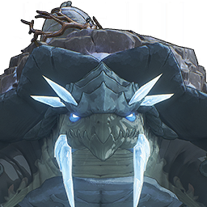

Bell-Borne Geochelone

Element: Glacio
The giant turtle lurking in the cold pond, carrying the ancient bell, sleeps.
Once, a researcher tried to transcribe the inscriptions on the ancient bell on the turtle's back, but accidentally disturbed the giant turtle's peaceful dream—
Whenever the giant turtle awakens, the long bell ringing echoes in the Gorges of Spirits.